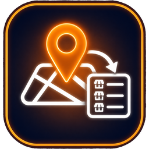
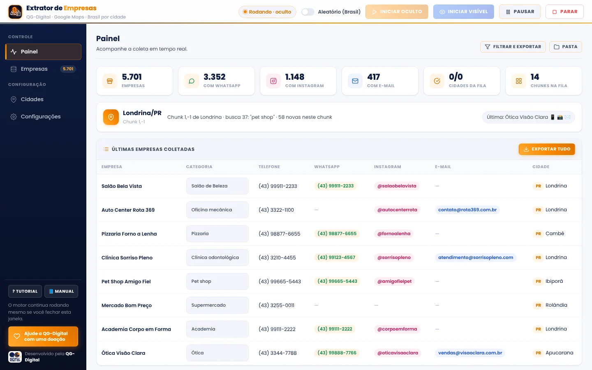
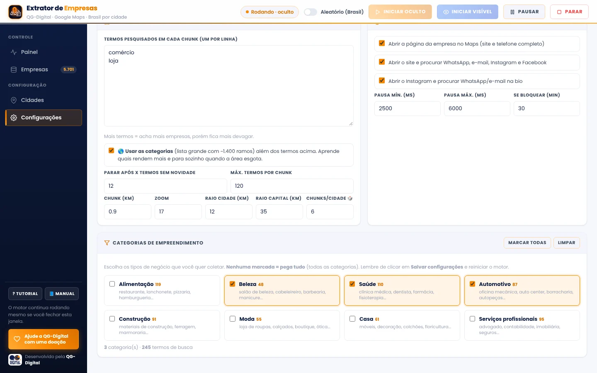
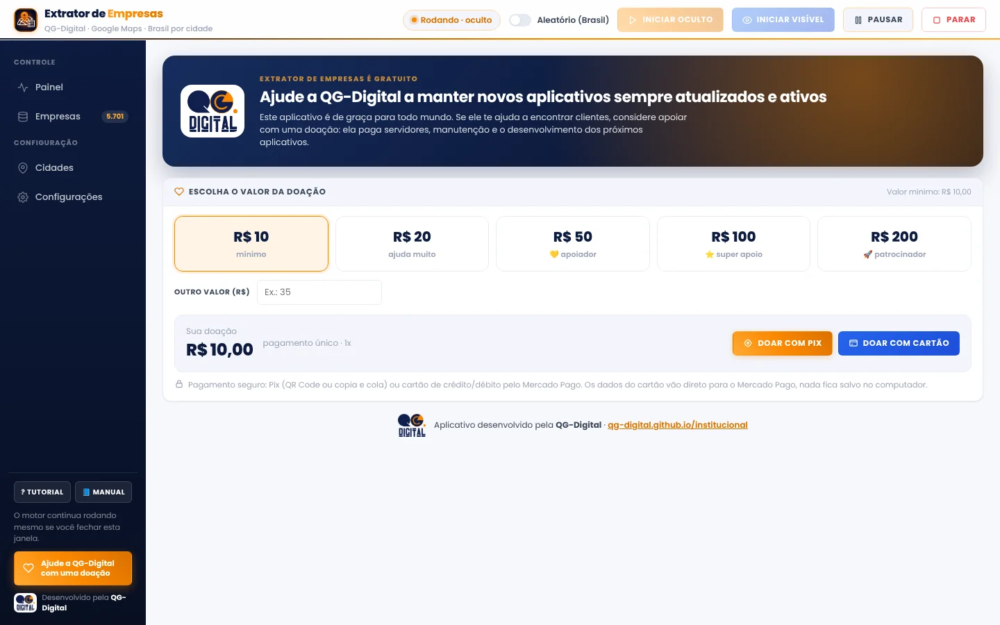

Grátis · WindowsExtrator de Empresas
Listas de empresas do Google Maps prontas para você prospectar. Escolha a cidade e as categorias, e o Extrator monta a lista com telefone, WhatsApp, Instagram, e-mail e site.

Da cidade à lista pronta, em 4 passos
Você só escolhe onde e o quê. O Extrator faz o trabalho chato de abrir o mapa, olhar empresa por empresa e anotar os contatos.
Baixe e instale
Instalador simples, sem cadastro e sem cartão. Na primeira vez, um tutorial mostra onde fica cada coisa.
Escolha onde buscar
Monte uma fila de cidades por estado ou ligue o modo Aleatório (Brasil), que sorteia cidades do país inteiro.
Escolha as categorias
Salão, oficina, restaurante, clínica, construção... são 18 categorias com mais de 1.400 ramos. Nenhuma marcada? Ele pega tudo.
Filtre e exporte
Filtre por cidade, categoria e contato, e exporte um CSV com link direto para o WhatsApp de cada empresa.
Cada empresa com os contatos que importam
Para cada empresa do mapa, o Extrator abre a página no Google Maps, visita o site e confere a bio do Instagram atrás do WhatsApp e do e-mail.
- Nome, categoria e endereço
- Telefone
- Site e Facebook
- Nota e avaliações
- Cidade e coordenadas


Sem assinatura, sem limite de empresas
O Extrator de Empresas é gratuito para todo mundo. Se ele te ajudar a fechar negócio, você pode apoiar a QG.Digital com uma doação a partir de R$ 10, por Pix ou cartão, direto no aplicativo. A doação mantém os aplicativos sempre atualizados e ajuda a criar os próximos.
- Roda no seu computador: as listas ficam só com você
- Continua de onde parou, mesmo se fechar o painel
- Se recupera sozinho se a internet ou o navegador cair